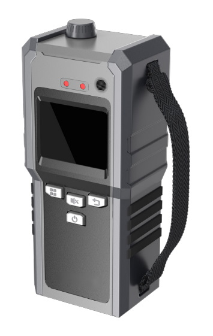

Solafact 800
Product Introduction

SOLAFACT 800 Handheld Chemical Toxic Agent Detector is a detection instrument independently designed and manufactured by the company for rapid detection of trace chemical toxins and radioactive substances (optional). The instrument adopts the world's advanced time-of-flight ion mobility spectrometry technology, array multi-sensing fusion technology and scintillator detection technology, which can detect trace chemical agents, industrial toxic and harmful gases and radioactive pollution online, quickly and accurately. Widely used in military anti-terrorism, emergency security, environmental monitoring, nuclear power inspection and other fields, the comprehensive performance of the instrument has reached the advanced level of similar products in the world.
Features
Compact and lightweight, easy to operate.
High sensitivity, the typical value of sarin can reach 0.1mg/m3
High resolution can distinguish chemical agents and industrial toxic and harmful gases.
Fast response, it only takes 2~15s to detect.
Possess anti-interference ability, able to resist typical interference such as gunpowder smoke, grass smoke, engine exhaust gas, etc.
The standard substance library can be upgraded, and the detection types can be expanded.
Optional nuclear radiation detection module can be installed according to requirements.
Technical Specifications
Parameter name
Performance parameters
Length x width x height
≤ 215mm×102mm×66mm
Weight
≤ 1.5kg
Powered by
18650 Lithium battery X 2 section
Gas detection sensitivity and response time ( except below freezing point )
It can detect sarin, soman, viex, mustard gas, lewis gas, phosgene, hydrocyanic acid, cyanide chloride, ammonia, chlorine, hydrogen sulfide, sulfur dioxide, etc., in which sarin 0.1mg / m3, response time ≤ 5s ; ammonia 10mg / m3, response time ≤ 10s.
Nuclear radiation monitoring capability
Detection range：0.01μSv/h~10mSv/h
Detection accuracy：±10%
Energy of nucleus response：±10%
Detection source：35KeV~1.5MeV
Working Temperature
-20℃ ~50℃
Storage temperature
-40℃ ~70℃
Warm-up time
≤ 20min
Stream time
≥ 6h(0℃ ~40℃)
≥ 4h(-20℃ ~0℃)
Anti-interference
There is no false alarm in the environment of nitrate smoke, plant smoke and engine exhaust gas.
Application Area
It is mainly used in military anti-terrorism, emergency security, environmental monitoring, industrial production, petrochemical, customs, fire protection, sanitation and other fields.
The uses are as follows:
Environmental monitoring, and real-time monitoring of environmental pollutants.
Emergency Response to Leakage of Highly Toxic and Dangerous Materials.
Industrial odor, toxic gas detection and real-time monitoring.
Security checks in public places and places where people gather.
Monitoring of chemical production sites, leak or defect inspection of chemical containers.
Security protection of ports and railways, security patrols of customs and borders, etc.
Field detection of chemical warfare agents in military anti-terrorism.
Contact Us